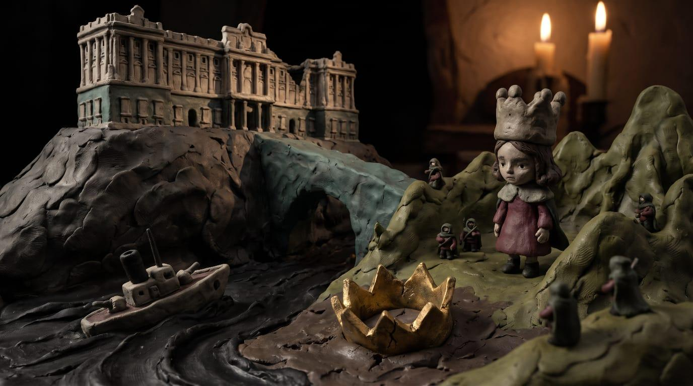
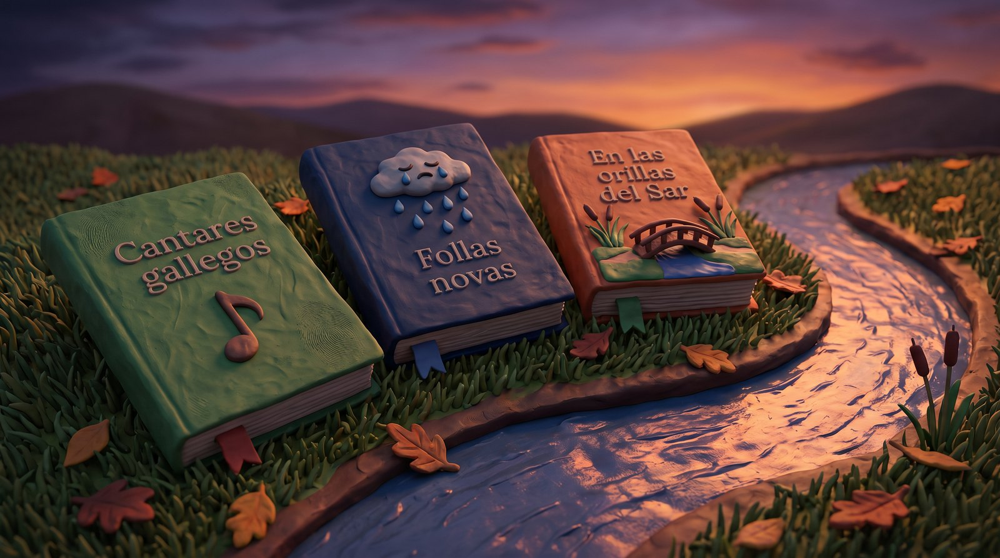
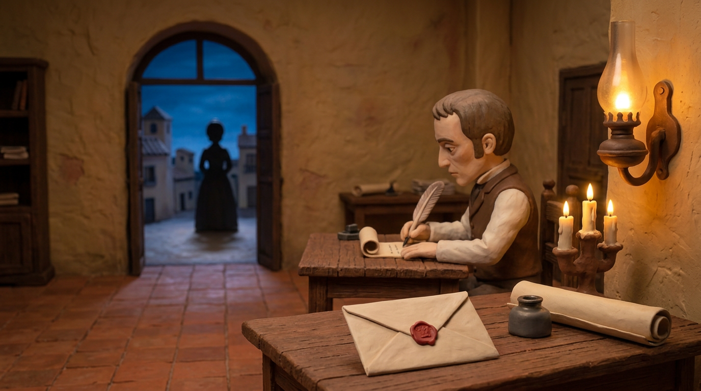

MAPA CONCEPTUAL FINAL
LA LITERATURA DEL ROMANTICISMO EN ESPAÑA
HUIDA HACIA LO IRRACIONAL

DOS TENDENCIAS
CONSERVADORA: TRADICIÓN
REVOLUCIONARIA: CAMBIO
RASGOS Y COSTUMBRES
INDIVIDUALISMO
PESIMISMO · MUERTE
MISTERIO · COSTUMBRES
POESÍA
POETAS ROMÁNTICOS
RIVAS · ROMANCES
ESPRONCEDA · LIBERAL

POESÍA INTIMISTA
BÉCQUER · RIMAS
ROSALÍA · EN LAS ORILLAS
DEL SAR
PROSA

LARRA
EL DONCEL DE DON
ENRIQUE EL DOLIENTE
ARTÍCULOS · IRONÍA
BÉCQUER
LEYENDAS · 1858–1864
SOBRENATURAL
MUERTE
TEATRO
DRAMA ROMÁNTICO
AMOR IMPOSIBLE
FINAL TRÁGICO
RIVAS · ZORRILLA

OBRAS TEATRALES
DON ÁLVARO O LA
FUERZA DEL SINO
DON JUAN TENORIO